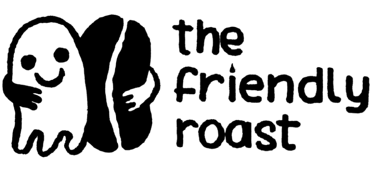

Roasting is half art, half science
Chemical processes occur as beans are heated. The bean can be heated via conduction, convection and radiation. Roasting machines maximise convection, because conduction burns the outside and radiation is expensive. The perfect roast profile allows the flavours of the seeds of a coffee tree grown near the equator to show themselves. Too much heat early on causes the inside of the bean to burn. Too little heat, or too long a roast, bakes the flavours — muting acidity, aromatics and sweetness. Like so many of us, a roaster seeks balance.
"We roast coffee to see how the flavours transform — in each roast, each brew, each sip."
-
2021
Kasper's roaster. Michael's friend Kasper taught him to roast on his Gene Cafe CBR-101e — 250 grams at a time, one experiment after another. Kasper did online roasting courses at night. By day, they put pen to paper, noting down readings from the temperature probe on the Gene and the two other temperature probes Kasper had added into the machine. The simple on-off heating element in the Gene no longer satisfied Kasper's desire for roast control. Soon a circuit board sat beside it, plugged into a laptop running Artisan.
-
2023
Going bigger. Michael bit the bullet and got an Aillio Bullet, moving up to 1 kg batches. He bought some nice brown paper coffee bags, a stamp and a label maker. Quietly, Michael stole the brand 'the friendly roast' from Kasper without really asking. Kasper forgave him instantly. Michael panicked over every roast. He asked heaps of questions of Kasper and his local roast guru, Fabian from Chiva Coffee in Den Haag.
-
Today
Still curious. Michael sources beans from importers such as The Coffee Quest, This Side Up, Ally Coffee, Bette Buna and Attesa. Kasper and Michael — and occasionally their wives — cup the samples, silently. When a coffee compels Michael, usually because Kasper praises it, he thinks 'I could happily drink this for the next few months', and the next roast mystery begins. He keeps roasting, tasting and tweaking — and sharing whatever he finds compelling.
The passage of time changes all. It changes the unroasted coffee and the roasted coffee. The roaster and the coffee drinker must adapt.
The coffee grower must adapt. Michael hopes coffee continues to grow on this planet.
It would be cool if you buy some of this coffee, then Michael can roast more.
